Ejercicio 1
1- Busca información en Internet de como montar un servidor telnet, bien en Windows o bien en GNU/Linux.
Para comenzar la instalación abrimos la terminal y ejecutamos el comando sudo apt update para actualizar
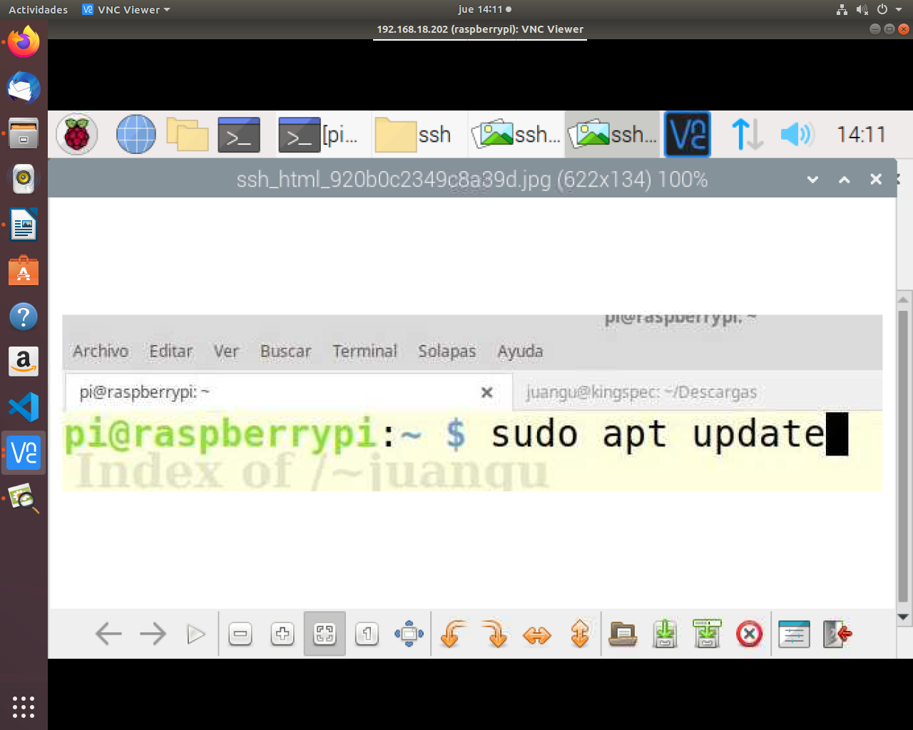
A continuación “Sudo apt-cache search telnetd” para buscar donde se ha guardo el telnetd
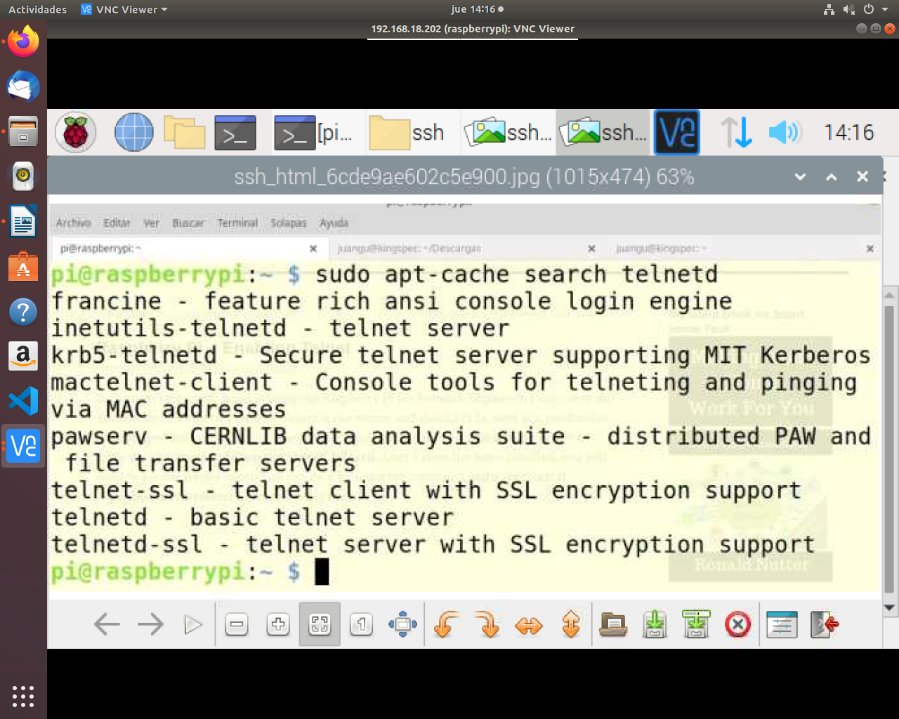
Seguidamente el comando “sudo apt install telnetd” para instalar el telnetd.
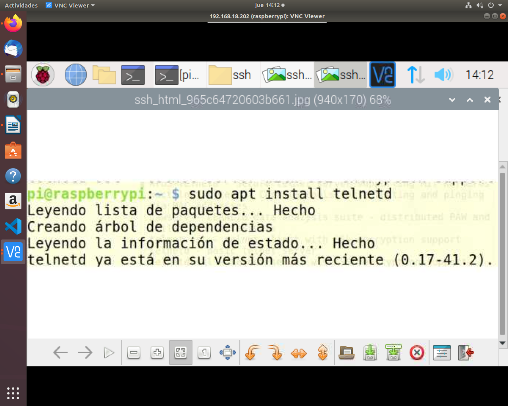
Ejecutamos el comando “sudo etc/init.d/openbsd-inetd restart” para reiniciar el telnet
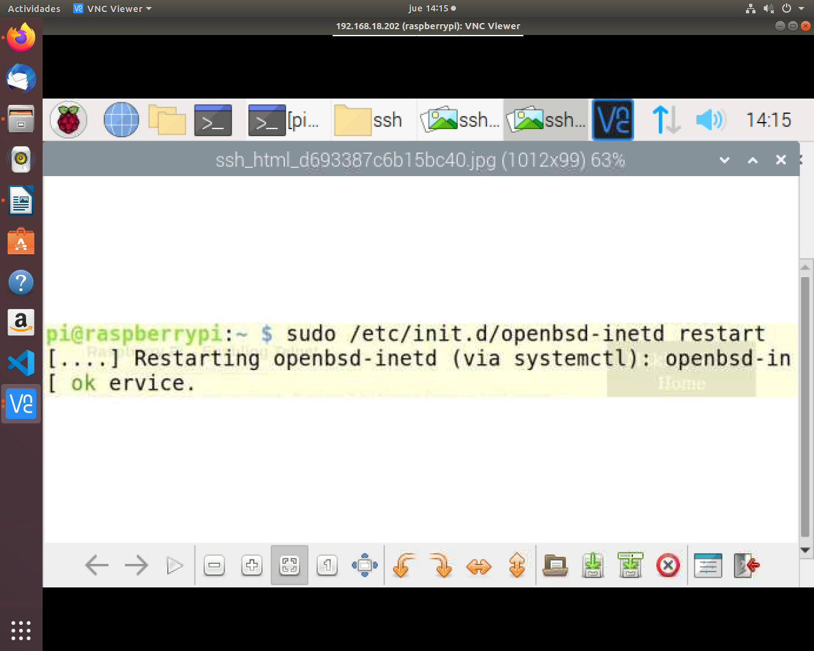
“nmap localhost” nos ayudara a buscar todos los programas parecidos a telnetd.
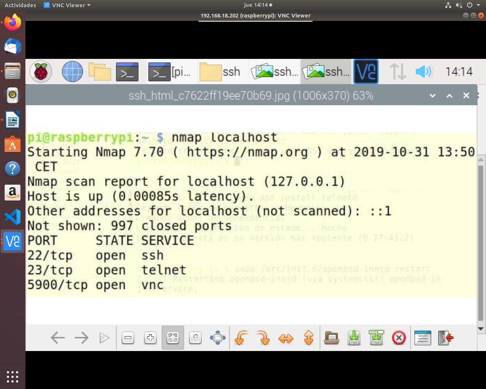
Para comprobar que ha sido instalado correctamente nos iremos al terminal de ubuntu y pondemos el comando telnet 192.168.18.202, si podemos acceder estará bien instalado.
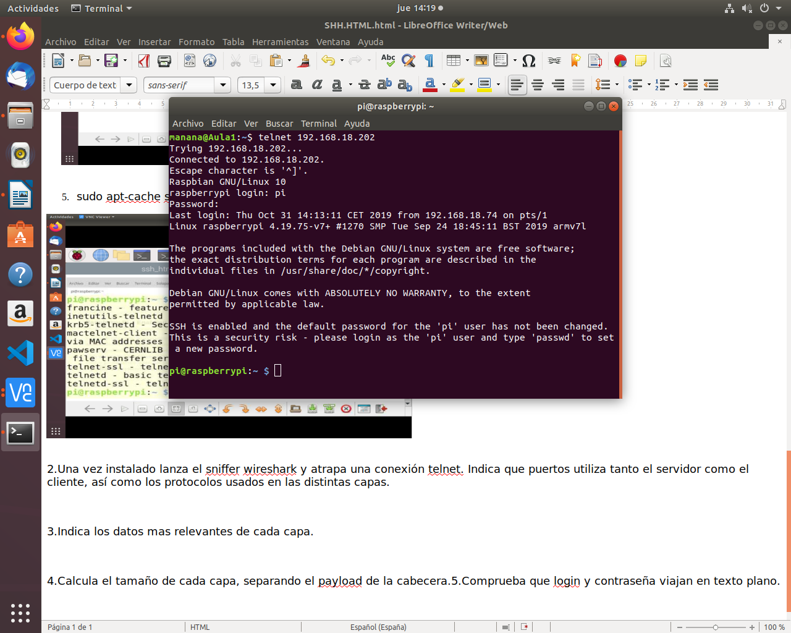
2- Una vez instalado lanza el sniffer wireshark y atrapa una conexion telnet. Indica que puertos utiliza tanto el servidor como el cliente, así como los protocolos usados en las distintas capas.
Nos metemos en la terminal y ponemos el comando “sudo wireshark” y se los abrirá dicha aplicación.
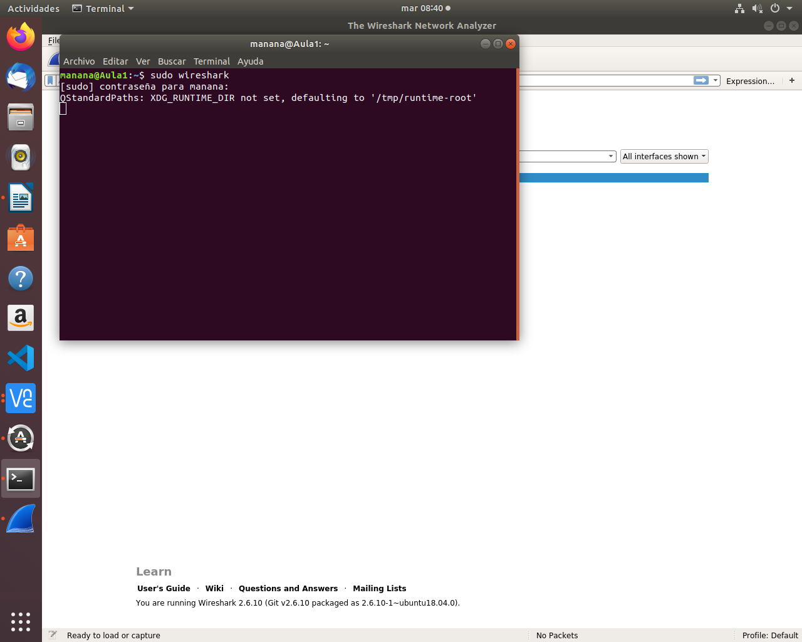
En la terminal poner “telnetd 192.168.18.202” para conectarnos a la raspberrypi
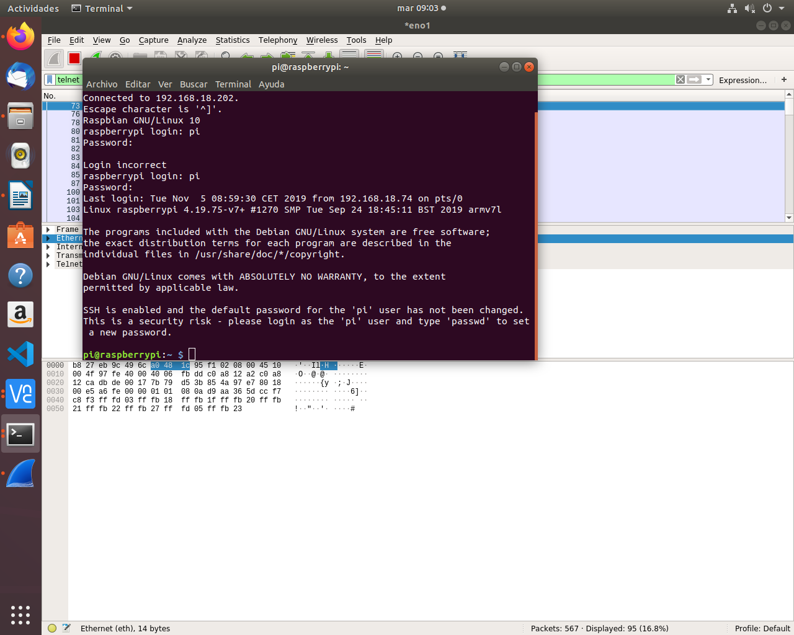
Nos vamos wireshark, paramos el tráfico que hemos generado y buscamos telnet.
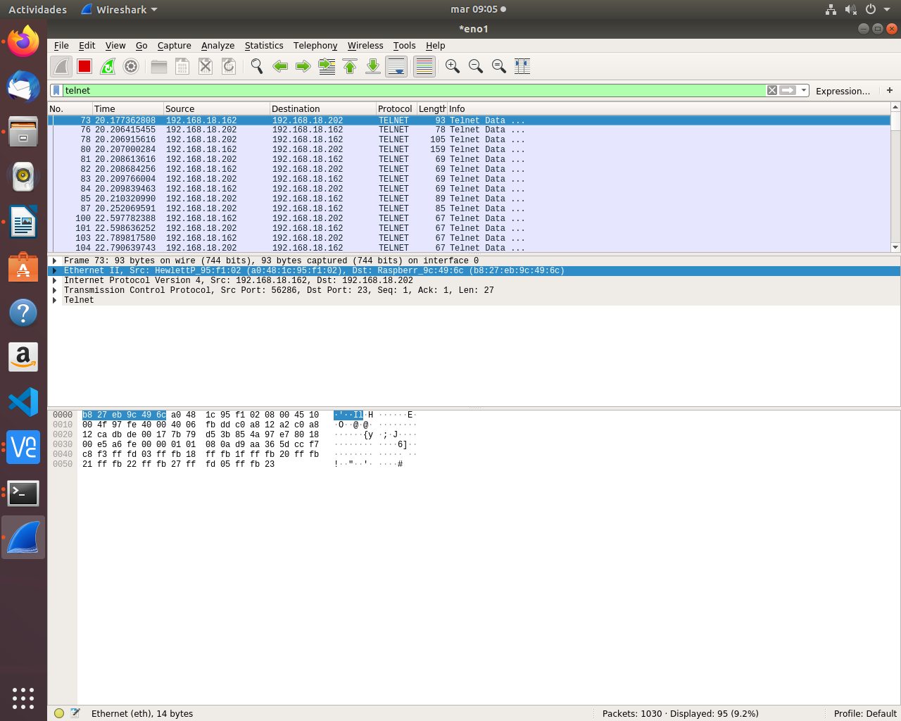
Pinchamos en una de la direcciones telnet de nuestra ip 192.168.18.202. Le damos clip derecho y pinchamos en follow, se nos abrirá una pestaña en la que haremos clip en TCP Stream, donde nos muestra los datos del flujo TCP
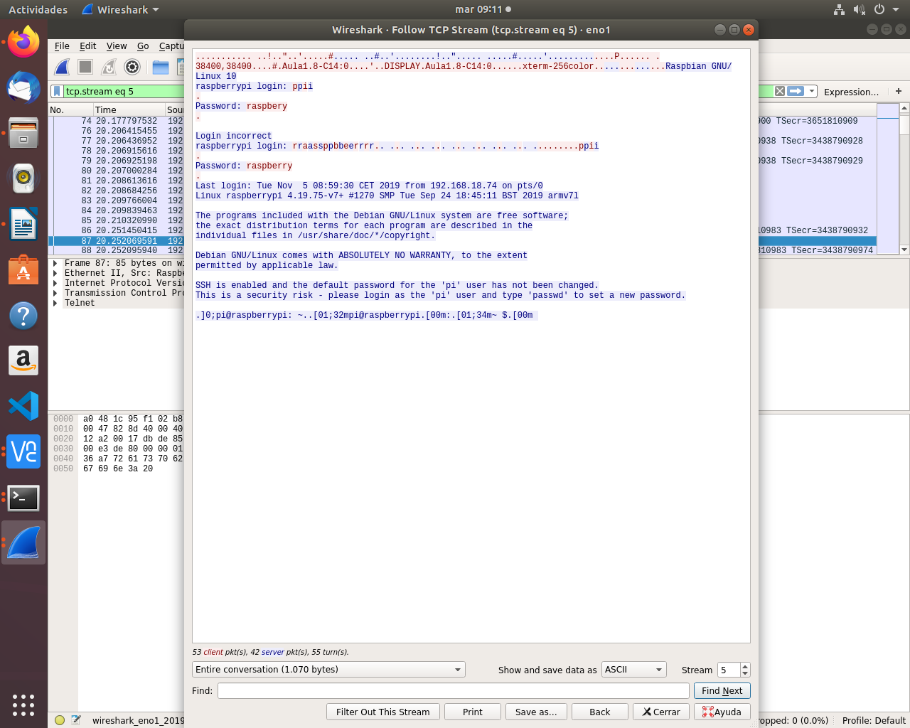
3- Indica los datos mas relevantes de cada capa.
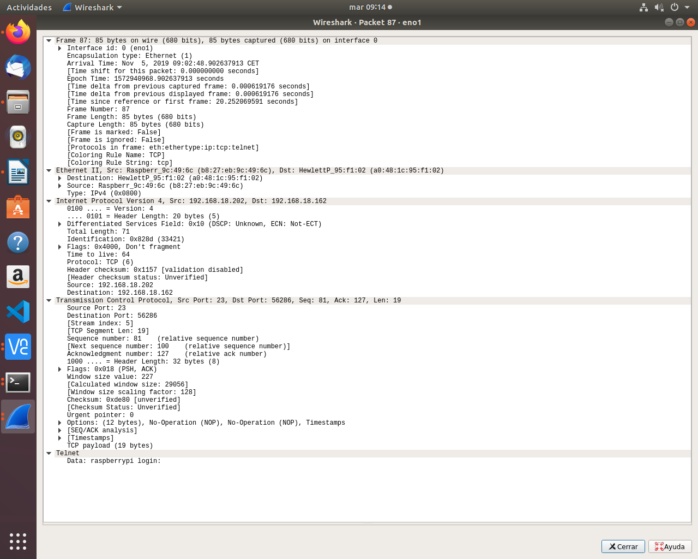
4- Calcula el tamaño de cada capa, separando el payload de la cabecera.

5- Comprueba que login y contraseña viajan en texto plano.
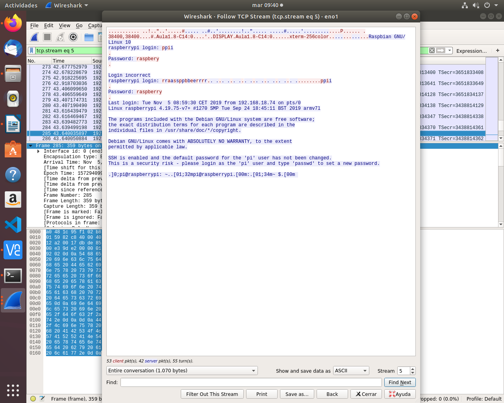
6- Crea en el equipo remoto un directorio, un archivo de texto y posteriormente borralos.
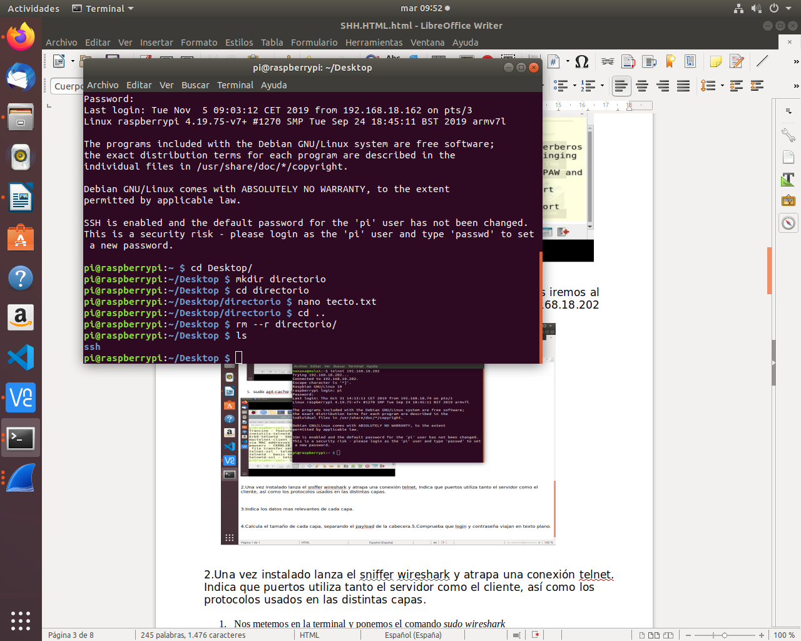